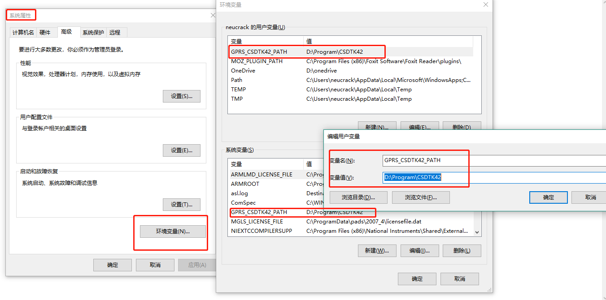
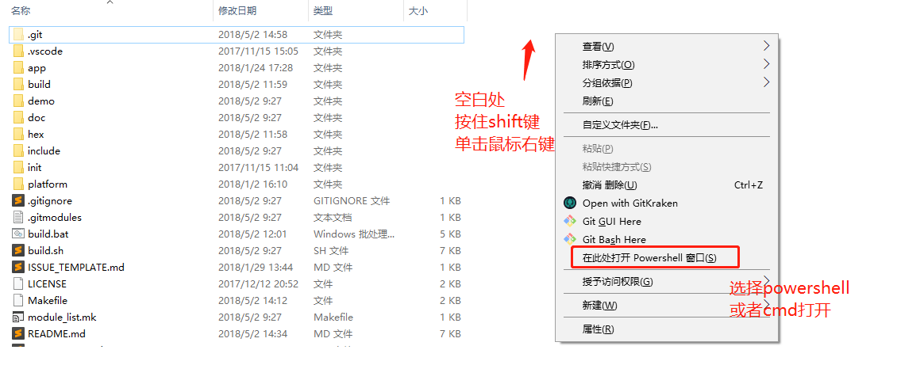
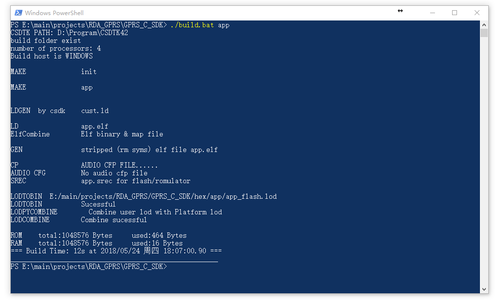

GPRS C SDK 开发环境搭建
1. 注意
重要，请先阅读
SDK没有特定的IDE，用户自己选择代码编辑器编辑代码。
在修改代码时，一定不能使用windows自带的记事本和写字板，请使用更加专业的编辑器(推荐使用如vscode，sublime，atom，eclipse,source insight等，或者其它你熟悉的编辑器。)
比如使用VS Code, 它支持函数跳转等基本功能(在vscode里面搜索C/C++插件安装),多使用搜索功能(侧边栏搜索图标)会很方便
请修改编辑器设置，文件结尾符号设置为unix风格(
<LF>(\n)结尾)(设置方法请自行到网络查找)如果你是使用git进行克隆，请设置git在pull时不将
<LF>转换为<CR><LF>，设置方法参考这里
2. 下载工具链以及下载调试工具及SDK
注意： 下载完请检查
platform/csdk文件夹下是否包含debug、release文件夹，没有说明下载文件不全，请重新下载完整的SDK 如果使用git克隆，因为工程使用了子模块，请添加--recursive参数，否则克隆下来的文件不全无法编译成功
3. 安装
- 解压到某个文件夹,比如
C:\CSDTK,路径请不要带中文！ - 运行CSDTk目录下的
config_env_admin.bat文件来设置环境变量这个脚本做的事情就是新建一个名为
GPRS_CSDTK42_PATH的环境变量，变量值为CSDTK的目录路径。 如果脚本建立失败也可以自己手动建 
4. 编译
解压下载到的CSDK为
GPRS_C_SDK文件夹放到某个目录下，比如C:\GPRS_C_SDK，请使用下划线(_)而不是减号(-)进入CSDK文件夹（
C:\GPRS_C_SDK），按住shift，在文件夹内空白处鼠标右键单击，选择cmd打开或者powershell打开，如图：

使用./build.bat app 或者 build.bat app来编译工程，测试环境是否可用，如果正常，会出现以下结果：

如果提示NO CSDTK,Please install CSDTK first!，则是环境变量没有生效（在win7下可能会出现），可以重启电脑以生效
保证环境可以使用后，就可以在CMD或powershell窗口中使用build.bat脚本来编译工程，有以下参数：
- 使用
./build.bat $PROJ来编译你的应用模块，如./build.batsh app则是编译app目录下的源码 - 使用
./build.bat demo $PROJ来编译demo目录下的特定例程，比如./build.bat demo gpio - 使用
./build.bat clean $PROJ清除$PROJ目录的中间文件 - 使用
./build.bat clean all清除所有中间文件 - 使用
./build.bat demo $PROJ release来生成release版本，比如./build.bat demo gpio release， 如果最后一个参数不是release，则默认是debug版本，debug版本在死机后会停止运行并可以使用GDB调试，而release版本加入了看门狗功能，在死机时会自动重启系统，所以实际投入使用时请使用release版本以防止出现bug时死机，测试时使用debug版本
比如：
./build.sh demo gpio
进行编译，编译会生成一个build目录，编译完成会在hex目录下生成两个格式为lod的文件，这就是我们用来下载到开发板的目标文件
- 目标文件说明
两个文件一大一小，在第一次下载时需要下载大文件(*_B*.lod)即可，第二次和以后为了减少下载时间都只需要下载小文件(*_flash.lod)即可，更新SDK后需要重新下载大文件